An introduction to European electrics
The electrical system in Europe can be varied, as different countries adopted different rules over the past century. However, over time most countries have standardised on electrical pracices derived from the German electrical system.
This page documents, specifically, the electrical standards adopted by these countries. A separate page is available for the practices adopted by Italy, as its electrical system has some significant differences.
Plugs
Three types of plug are commonly found on European appliances. By far the most common is the CEE 7/16 Europlug, a small non-earthed plug used with low-powered devices such as phone chargers, desk lamps and TVs. This plug is compatible with all sockets in continental Europe; its main limit is the lack of earthing and maximum rating of 2.5A.
For earthed appliances, CEE 7/7 plugs are used. They are compatible with both Schuko and French-style sockets and have a rating of 16A. Rewireable versions exist, though it's common to instead use CEE 7/4 (Schuko-only) and 7/6 (French-only) plugs.
Additionally, CEE 7/17 plugs are often found on high-power non-earthed devices, such as hairdryers and space heaters; they can be regarded as the non-earthed version of CEE 7/7. These plugs are almost always only seen moulded on cords. Rewireable versions exist but aren't allowed in some countries and in general are very uncommon.
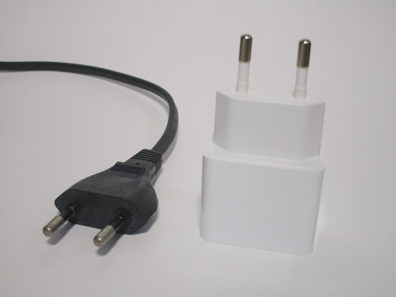 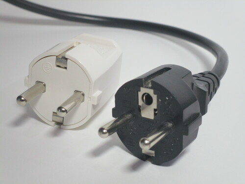 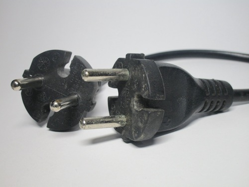{kind=link}
{kind=link}
{kind=link}
Power sockets
CEE 7/3 "Schuko" sockets are by far the most common type of power socket in use in Europe. These are earthed sockets; the earth connection is provided by two tabs on the side of a deep recess, which makes it impossible to touch the pins of the plug while they're live. Schuko sockets aren't polarised, which means that plugs can be inserted in either direction, without distinction between line and neutral.
In five countries in Europe French-style (CEE 7/5) sockets are used; these have an earth pin protruding from the front and are polarised, though the polarisation isn't well-enforced. On these sockets, safety shutters are always present.
Normal wall boxes are cabable of fitting a single socket, though there are also double sockets available. These stick out from the wall lightly more than a standard outlet, but are very convenient and avoid the difficulty of replacing the entire box with a larger one. Surface-mount power sockets are also available and tend to be used in garages and industrial installations, where surface-mount cables or conduit may be preferrable.
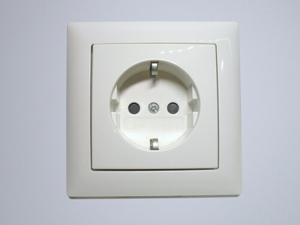 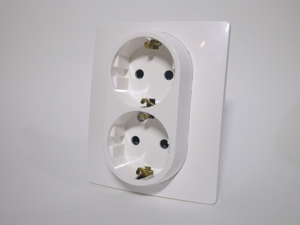 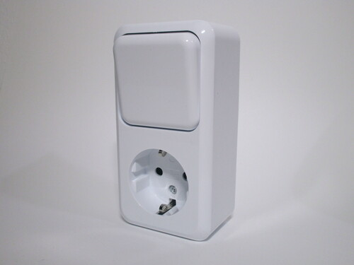{kind=link}
{kind=link}
{kind=link}
Light switches and other accessories
Light switches have a large surface, which is pushed up or down to toggle the lights on or off. Double switches are available and commonly used, housing two light switches in a single device. In some instances, pushbutton-style switches are used alongside a relay, which can be useful for controlling a light from different locations without complex wiring.
Electrical accessories are generally non-modular, comprised of a single block which a faceplate is then attached to. In a larger style of wall box, multiple devices are installed, with a single faceplate that clips on all of the devices. Wall boxes tend to be installed either horizontally or vertically, so it's common for faceplates to support devices facing either orientation.
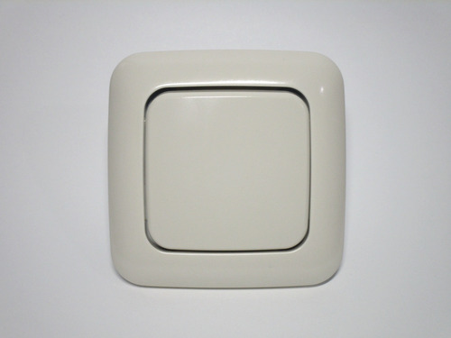 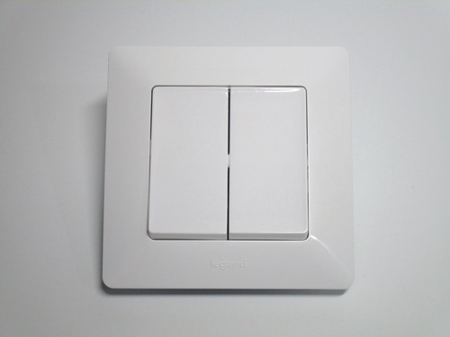 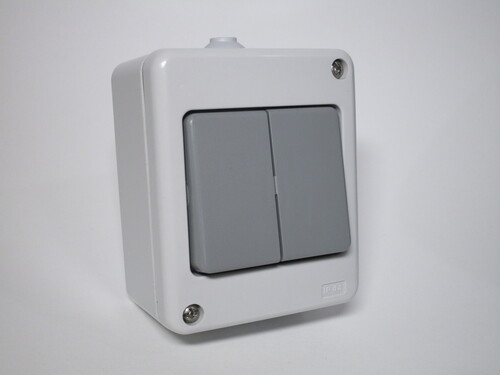{kind=link}
{kind=link}
{kind=link}
Breaker and fuse boxes
Breaker panels are generally fairly standard across Europe, with few differences. Everything is modular; the enclosures used - typically made of plastic - have a special type of metal rail inside, called a DIN rail. This is a standard widespread throughout the world and enables the use of different types of devices inside a panel aside from just breakers, for example power sockets, surge protection devices and doorbell transformers.
The power supply typically comes into some sort of main switch - this could be a breaker, but is more commonly an isolator switch, a single main RCD (though newer installations tend to use multiple RCDs), or Neozed fuses. Power is then fed to the breakers; nowadays, it is common to do so via a busbar - a piece of copper (covered by plastic, for protection) providing a power source to multiple breakers.
Old installations tend to use fuses, typically of the Diazed type, which was common in many European countries. These fuses are shaped like a bottle and fit inside a ceramic cap, which screws into an Edison socket. The design of the fuse and fuse holder is such that it's impossible to use a higher amperage of fuse than the circuit allows.
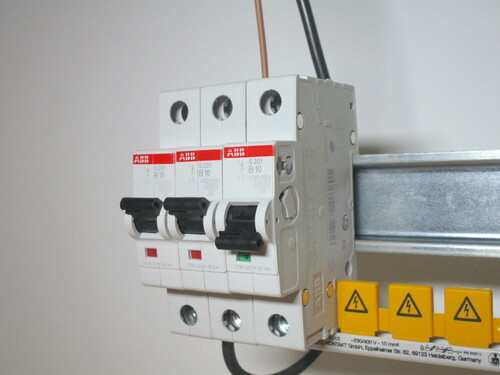 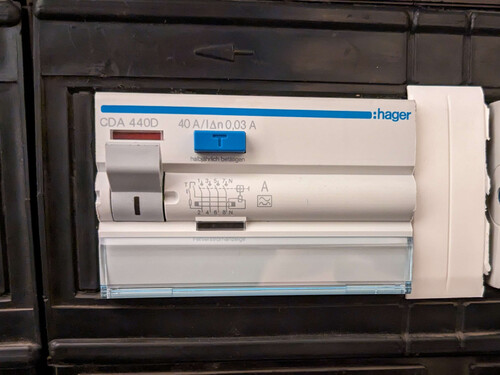 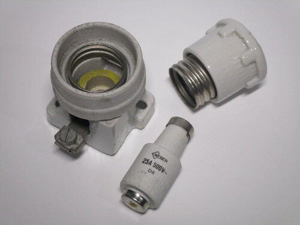{kind=link}
{kind=link}
{kind=link}